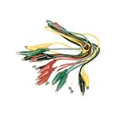
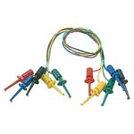
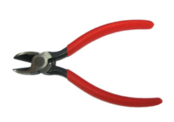
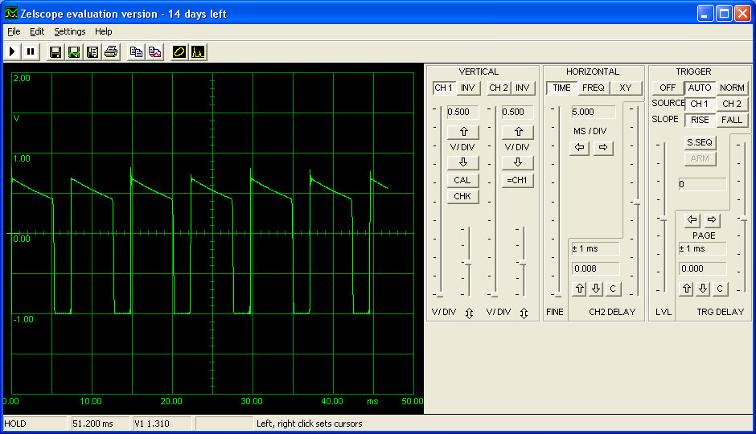

There are a few tools that are required for assembly. None of these tools are included. If you don't have them, now would be a good time to borrow or purchase them. They are very very handy whenever assembling/fixing/modifying electronic devices! I provide links to buy them, but of course, you should get them whereever is most convenient/inexpensive. Many of these parts are available in a place like Radio Shack or other (higher quality) DIY electronics stores.
I recommend a "better" electronics tool set for this kit, which I describe here.
 |
Soldering iron. One with temperature control and a stand is best. A conical or small 'screwdriver' tip is good, almost all irons come with one of these. A low quality (ahem, $15 radioshack) iron will cause more problems than its worth. I cannot emphasise enough how important a good iron is. Why save a few $ and destroy a $350 kit? Check out my recommended iron and where to buy.
|
 |
Solder. Rosin core 60/40. Good quality solder is a good thing. Cheap solder leads to bridging and cold solder joints which can be tough to find. Dont buy a tiny amount: a 1/2 lb. spool should suffice. |
| Thin (Silver) Solder or Solder Paste. For soldering the surface mount component | |
Power Supply See below for instructions on how to make one |
|
 |
Multimeter A handheld meter, at least, is necessary.A multimeter with a transistor (hfe) checker is handy for categorizing the '733 transistors |
Oscilloscope A 'scope is even more handy for debugging & analyzing circuits. For audio hacking, you may want to look into software "soundcard oscilloscopes" see below for details. |
|
|  | Alligator Clips and/or Test Clips Will be essential when it comes to testing parts of the kit with a multimeter, or for applying voltages to the kit for testing. |
| Needle-nose pliers. For bending leads, etc. | |
 |
Tweezers. For holding components steady. |
 |
Dikes/large diagonal cutters. For cutting potentiometers down. |
Flush/diagonal cutters. Essential for cutting leads close to the PCB. |
|
 |
Desoldering tool. If you are prone to incorrectly soldering parts. |
 |
(De)solder braid. For fixing solder bridges. |
 |
Board holder. Not necessary but will make things go much much faster. |
| Good light. More important than you think. | |
 |
Magnifying glass. To examine work carefully. |
{kind=link}
{kind=link}
Go here for instructions on how to make a soundcard scope probe
I used Zelscope, there's a 14 day trial and it was the first thing that came up on Google so it wins. It probably doesn't matter which audioscope software you use. It'll all be kinda awful.
Here is how I had my audioscope set up for the tests shown in the x0xb0x build manual.

Being able to poke voltages into the x0xb0x will help you debug the kit. You can buy an adjustable power supply for $50 or so, or build your own from a another one) Just look for any power supply kit that has a LM317 in it.
You can also build it for $10 using a 9V battery as input and test clips for outputs. This won't be able to provide a lot of power (cause its just a 9V) but it can go pretty far for testing and debugging
Click here for instructions on how to make your own